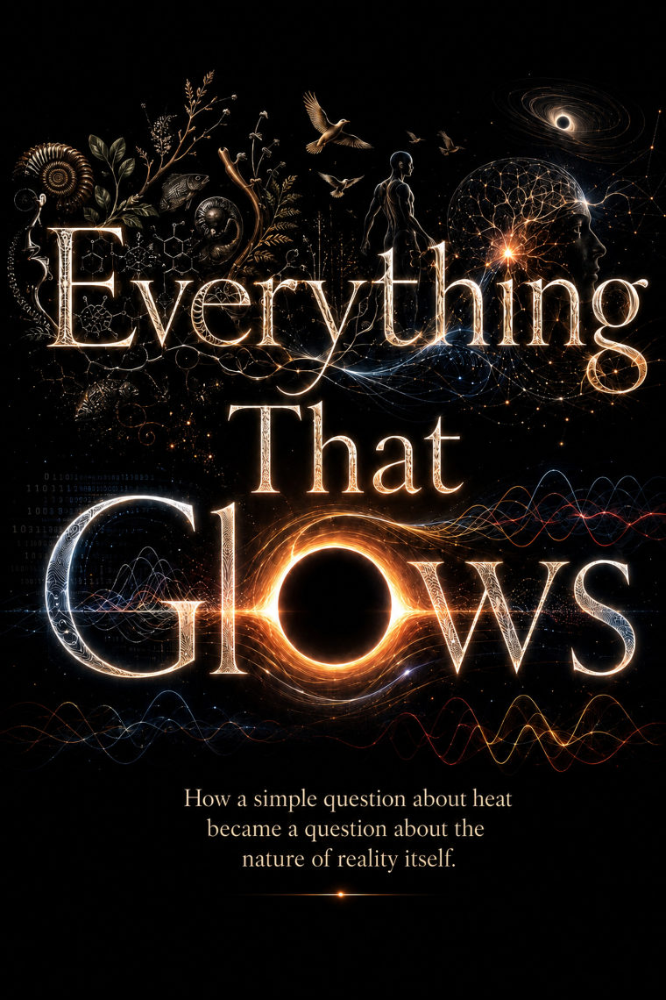

A book in twelve chapters · free to read
Everything That Glows
Why the world that glows, remembers, lives, falls, holds, reflects, works, and counts is, underneath, made of information.
The whole book, in your browser. No paywall, no sign-up. ·
Everything That Glows is a book about the deepest idea in modern physics: that information is physical.
That to know a thing, to remember it, or to forget it is never free; that each costs something real and measurable; and that this single fact runs like a thread through heat and light, life and gravity, number and mind. It is the story of how a question about a cooling cup of coffee turned, over two centuries, into a question about everything.
It is written for the curious, not the credentialed. There is no prerequisite but attention. And it is here in full, free to read, because understanding should not sit behind a gate.
Questions you’ll get to live with
You don’t need the answers to begin — only the pull of the questions.
- Why does forgetting a single bit of information release a tiny, unavoidable trace of heat?
- What does a cup of coffee cooling on your desk have in common with a black hole?
- Is mathematics something we discover, or something we invent — and could we ever run out of it?
- Why does time run one way, when the laws underneath barely notice a direction?
- What is a “particle,” really, once you stop picturing a tiny ball?
- If the world is, underneath, made of information — whose is it, and where is it kept?
The twelve chapters
The book is one continuous story, read from the beginning. Here is the path ahead.
-
I Everything That Glows How a question about heat became a question about everything~56 min
-
II Everything That Remembers How a question about forgetting became a question about what can be known~70 min
-
III Everything That Lives How a question about handedness became a question about what life is~55 min
-
IV Everything That Falls How a question about falling became a question about the shape of space and time~54 min
-
V Everything That Holds How a question about why anything is solid became a question about what a particle is~33 min
-
VI Everything That Reflects How a question about a mirror became a question about when anything becomes real~32 min
-
VII Everything That Works How a question about effort became a question about what everything costs~58 min
-
VIII Everything That Counts How a question about whether numbers are real became a question about which truths we find, which we make, and why both can be lost~28 min
-
IX The Two Uninvited Guests On the secret kinship of π and e, and how turning, growing, and the laws of nature come to be written with the same two letters~34 min
-
X The Music No One Composed How the prime numbers turned out to be a chord, and why no one knows what is playing it~42 min
-
XI The Made World What engineering is, where it comes from, and why understanding it is part of understanding the real~38 min
-
XII While the Light Lasts What the longest studies of human life have found about what a life is for, and why the vastness of the universe makes the kitchen table matter more, not less~28 min
About
I am not a physicist. I am someone who could never stop asking how the world works, and who found out, slowly, that the asking is open to anyone. I wrote this book to share that, and to argue that the deepest ideas in science belong to everyone willing to look.
— Karl Meves
Questions
Is the book really free?
Yes. The entire book is free to read online, with no paywall and no sign-up.
Can I share it?
Please do. Send the link to anyone who might be curious; sharing it is the whole point of keeping it free. The text stays the author’s own, so please point people to the book here rather than reposting it elsewhere, but the link is yours to spread as widely as you like.
Do I need an account?
No account, no email, nothing is collected. Just open it and read. Your place is remembered only in your own browser.
Can I read it offline?
Yes. The site is a Progressive Web App: once loaded it works offline, and you can install it to your phone or desktop home screen.
What is the book about?
In twelve chapters it argues that the world is, underneath, made of information — tracing one idea through heat, memory, life, gravity, matter, measurement, number, and more.
How long is it?
Twelve chapters, around nine hours of reading in total, though it is built to be read in pieces. The book holds your place, so you can read a section at a sitting and come back whenever you like.
Who wrote it?
Karl Meves, who is not a physicist but someone who could never stop asking how the world works. The short version is in the foreword; the longer answer is the book.
Two ways to read
However you like to read, the whole book is free. Start in your browser for the fullest experience — or take it with you as an ebook.
Read here · recommended
The web edition
The complete book in your browser — no app, no sign-up, no paywall. More than a page-turner, it’s a reader built for living with the ideas:
- Flag any passage and add reflections that grow into a “thoughts across time” timeline as you read.
- Search the whole book, with a Reference & people index that quietly explains who’s who as they appear.
- Read aloud on‑device, and tune the theme, typeface and spacing to your eyes.
- Your place, flags and notes save on this device — and you can install it to read offline, like an app.
Take it with you
Download the ebook
Prefer your own reader, or want it on a Kindle or e‑ink device, offline forever? Download the whole book — the same text, the same equations and diagrams, free.
EPUB opens in Apple Books, Google Play Books, Kobo and most readers, with crisp, scalable equations. The Kindle‑friendly file renders equations as images; on a Kindle, add it with “Send to Kindle.”
Support the work
The book is free, and it will stay free. If reading it gave you something and you would like to give something back, you can support the work directly — or simply share it with someone curious. Either keeps it open for the next reader.